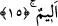

mânevî kuvveti vardır. Buna kıyasla, ahmaklıkta da tavşan ve benzeri güçsüz şeylerin
aczi olduğu anlaşılır.
Kötü kimse, ters esen rüzgâr sebebiyle
Emniyette olmayan çapasız gemi gibidir.
Akıllının emniyeti akıl çapasıdır,
Akıl sâhiplerinden böyle bir akıl dilen.
15. (Onların durumu) kendilerinden az önce geçmiş ve yaptıklarının cezâsını
tatmış olanların durumu gibidir. Onlara acıklı bir azap vardır.
“(Onların durumu) Kendilerinden az önce geçmiş ve yaptıklarının cezâsını tatmış
olanların durumu gibidir.” Bu cümle, “benzerleri” anlamındaki gizli mübtedânın
haberidir. Yâni anılan yahûdiler, münâfıklar ve onların hayret veren nitelikleri ile garip
huyları, Bedir’de müslümanlarla savaşan Mekke müşrikleri gibidir. Yahut
Kaynukaoğulları gibidir. Anlatıldığı gibi onlar Nadiroğullarından önce yurtlarından
çıkarılmışlardır. Kaynuka kelimesi nun harfinin üç harekesiyle de okunur. En yaygın
olanı nun harfinin ötresiyle kullanıldığı ve burada yazıldığı okunuş tarzıdır.
Kaynukaoğulları yahûdilerin en cesurları ve malları en çok olanlarıydı. Bedir savaşı
olunca, isyanlarını açığa vurup başkaldırdılar ve hasedlerini ızhar ettiler. Nadiroğulları
gibi sözleşmeyi bozdular. Bunun üzerine Rasûlullah (s.a.) onları Medine’den çıkarıp
Şam tarafına sürdü. Çünkü onların köyleri, Kaynukaoğulları tarafından yapılmıştı.
Rasûlullah (s.a.) onlara bedduâ etti, bir sene geçmeden tamamı mahvolup gitti. Onların
kıssaları geniş bir şekilde birinci cildde anlatılmıştı.
Âyet-i kerimedeki karîben zarfı mesel kelimesiyle nasbedilmiştir.
Mücâhid şöyle demiştir: Bedir savaşı Nadiroğulları olayından altı ay önce olmuştur.
Bu, sebeple âyette “az önce” buyrulmuştur. O halde bu hadise, Uhud savaşından önce
olmuş demektir. İki yıl önce olmuştur da denilmiştir. Buna göre Nadiroğulları savaşı
hicri dördüncü yılda gerçekleşmiş olur. Çünkü Nadiroğulları savaşı Uhud savaşından
sonra olmuştur. Uhud savaşı da Bedir savaşından bir yıl sonra olmuştur.
Âyette geçen vebâl kelimesinin tahlili konusunda farklı izahlar olmuştur. Râğıb
demiştir ki; vebl ve vâbil kelimeleri, “ağır yağmur, deve katarı, ağırlıkları koruma” gibi
anlamlara gelir.
Zararından korkulan iş için vebal denmiştir. Çok ağır yemek için de aynı şey
söylenmiştir. Emr kelimesi umûr kelimesinin tekilidir; evâmir kelimesinin değil.
“Yaptıklarının cezâsını tatmış olanlar” dan maksad, dünyada inkârlarının kötü